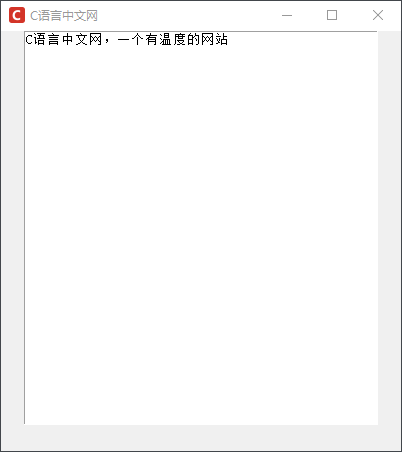
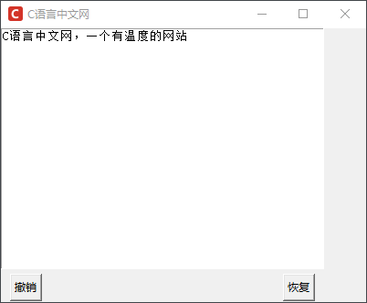
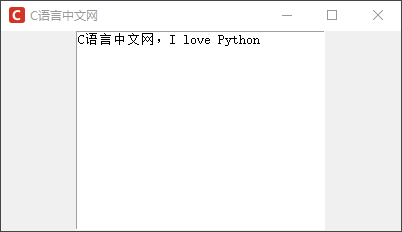
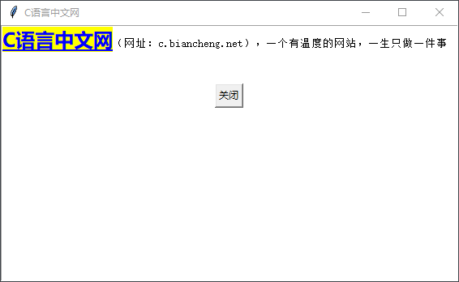
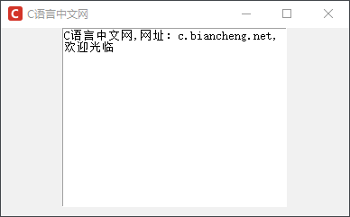

Tkinter Text文本框控件
Text 文本控件是 Tkinter 中经常使用的控件，与 Entry 控件相比，Text 控件用于显示和编辑多行文本，而 Entry 控件则适合处理单行文本。
Text 控件类似 HTML 中的
下面先看一组简单的实例介绍，实例如下所示：
上述代码中 Text 控件通过 heigt 和 width 参数来控制文本域的大小（即纸张大小），当然您也可以将其设置为自适用模式，即不设置具体的文本域大小。
下面定义上述代码做一下稍微改动，为其增加“撤销”和“恢复”的功能，代码如下所示：
文本控件（Text）支持三种类型的特殊结构，即 Mark、Tag 以及 Index，每一种结构都有相应的方法，下面对这些结构做相关的介绍。
Tkinter 提供以下文本索引类型，如下表所示：
下面看一组示例了解 Index 的使用方法：
下面针对上述属性和方法看一组简单的示例：
Mark 有两种类型的标记，分别是“INSERT”和“CURRENT”，其含义如下：
它们是 Tkinter 中预定义的标记，因此不能被删除。除此上述标记外，我们还可以通过 user-define marks（用户自定义标记） 的方式来自定义 Mark。Tkinter 也提供了一些有关 Mark 的常用的方法，如下所示：
注意：如果在 Mark 标记的位置之前插入或删除文本，那么 Mark 跟着一起移动。如果要删除 Mark 需要使用 mark_unset() 方法，但是只会删除 Mark 周围的文本，并不会删除 Mark 标记本身。
下面看一组简单的实例：
Text 控件类似 HTML 中的
<textarea>标签，允许用户以不同的样式、属性来显示和编辑文本，它可以包含纯文本或者格式化文本，同时支持嵌入图片、显示超链接以及带有 CSS 格式的 HTML 等。Text 控件的有很多的适用场景，比如显示某个产品的详细信息，或者人物介绍等。下面我们对 Text 控件属性和常用方法做简单的介绍。
基本属性
除了基本的共有属性之外，Text 控件还具备以下属性：| 属性 | 说明 |
|---|---|
| autoseparators | 默认为 True，表示执行撤销操作时是否自动插入一个“分隔符”（其作用是用于分隔操作记录） |
| exportselection | 默认值为 True，表示被选中的文本是否可以被复制到剪切板，若是 False 则表示不允许。 |
| insertbackground | 设置插入光标的颜色，默认为 BLACK |
| insertborderwidth | 设置插入光标的边框宽度，默认值为 0 |
| insertofftime | 该选项控制光标的闪烁频频率（灭的状态） |
| insertontime | 该选项控制光标的闪烁频频率（亮的状态） |
| selectbackground | 指定被选中文本的背景颜色，默认由系统决定 |
| selectborderwidth | 指定被选中文本的背景颜色，默认值是0 |
| selectforeground | 指定被选中文本的字体颜色，默认值由系统指定 |
| setgrid | 默认值是 False，指定一个布尔类型的值，确定是否启用网格控制 |
| spacing1 | 指定 Text 控件文本块中每一行与上方的空白间隔，注意忽略自动换行，且默认值为 0。 |
| spacing2 | 指定 Text 控件文本块中自动换行的各行间的空白间隔，忽略换行符，默认值为0 |
| spacing3 | 指定 Text 组件文本中每一行与下方的空白间隔，忽略自动换行，默认值是 0 |
| tabs | 定制 Tag 所描述的文本块中 Tab 按键的功能，默认被定义为 8 个字符宽度，比如 tabs=('1c', '2c', '8c') 表示前 3 个 Tab 宽度分别为 1厘米，2厘米，8厘米。 |
| undo | 该参数默认为 False，表示关闭 Text 控件的“撤销”功能，若为 True 则表示开启 |
| wrap | 该参数用来设置当一行文本的长度超过 width 选项设置的宽度时，是否自动换行，参数值 none（不自动换行）、char（按字符自动换行）、word（按单词自动换行） |
| xscrollcommand | 该参数与 Scrollbar 相关联，表示沿水平方向上下滑动 |
| yscrollcommand | 该参数与 Scrollbar 相关联，表示沿垂直方向左右滑动 |
基本方法
Text 中的方法有几十个之多，这里不进行一一列举，主要对常用的方法进行介绍，如下表所示：| 方法 | 说明 |
|---|---|
| bbox(index) | 返回指定索引的字符的边界框，返回值是一个 4 元组，格式为(x,y,width,height) |
| edit_modified() | 该方法用于查询和设置 modified 标志（该标标志用于追踪 Text 组件的内容是否发生变化） |
| edit_redo() | “恢复”上一次的“撤销”操作，如果设置 undo 选项为 False，则该方法无效。 |
| edit_separator() | 插入一个“分隔符”到存放操作记录的栈中，用于表示已经完成一次完整的操作，如果设置 undo 选项为 False，则该方法无效。 |
| get(index1, index2) | 返回特定位置的字符，或者一个范围内的文字。 |
| image_cget(index, option) | 返回 index 参数指定的嵌入 image 对象的 option 选项的值，如果给定的位置没有嵌入 image 对象，则抛出 TclError 异常 |
| image_create() | 在 index 参数指定的位置嵌入一个 image 对象，该 image 对象必须是 Tkinter 的 PhotoImage 或 BitmapImage 实例。 |
| insert(index, text) | 在 index 参数指定的位置插入字符串，第一个参数也可以设置为 INSERT，表示在光标处插入，END 表示在末尾处插入。 |
| delete(startindex [, endindex]) | 删除特定位置的字符，或者一个范围内的文字。 |
| see(index) | 如果指定索引位置的文字是可见的，则返回 True，否则返回 False。 |
下面先看一组简单的实例介绍，实例如下所示：
from tkinter import *
win = Tk()
win.title("C语言中文网")
win.iconbitmap('C:/Users/Administrator/Desktop/C语言中文网logo.ico')
win.geometry('400x420')
# 创建一个文本控件
# width 一行可见的字符数；height 显示的行数
text = Text(win, width=50, height=30, undo=True, autoseparators=False)
# 适用 pack(fill=X) 可以设置文本域的填充模式。比如 X表示沿水平方向填充，Y表示沿垂直方向填充，BOTH表示沿水平、垂直方向填充
text.pack()
# INSERT 光标处插入；END 末尾处插入
text.insert(INSERT, 'C语言中文网，一个有温度的网站')
win.mainloop()
程序运行结果：

图1：tkinter text控件
图1：tkinter text控件
上述代码中 Text 控件通过 heigt 和 width 参数来控制文本域的大小（即纸张大小），当然您也可以将其设置为自适用模式，即不设置具体的文本域大小。
下面定义上述代码做一下稍微改动，为其增加“撤销”和“恢复”的功能，代码如下所示：
from tkinter import *
win = Tk()
win.title("C语言中文网")
win.iconbitmap('C:/Users/Administrator/Desktop/C语言中文网logo.ico')
win.geometry('400x300')
# 创建一个文本控件
# width 一行可见的字符数；height 显示的行数
text = Text(win, width=50, height=20, undo=True, autoseparators=False)
text.grid()
# INSERT 光标处插入；END 末尾处插入
text.insert(INSERT, 'C语言中文网，一个有温度的网站')
# 定义撤销和恢复方法，调用edit_undo()和 edit_redo()方法
def backout():
text.edit_undo()
def regain():
text.edit_redo()
# 定义撤销和恢复按钮
Button(win,text = '撤销',command = backout).grid(row=3, column=0, sticky="w", padx=10, pady=5)
Button(win,text = '恢复',command = regain).grid(row=3, column=0, sticky="e", padx=10, pady=5)
win.mainloop()
程序运行结果：

图2：tkinter Text控件
图2：tkinter Text控件
注意：点击“撤销”按钮后输入的所有语句都会被删除，如果再点击“恢复”按钮，刚刚删除的内容又会恢复。
文本控件（Text）支持三种类型的特殊结构，即 Mark、Tag 以及 Index，每一种结构都有相应的方法，下面对这些结构做相关的介绍。
Index文本索引
Index 索引，用于指定字符在文本中的真实位置，这与我们经常使用 Python 索引是一样的，不过在 Text 文本控件中，两者之间的使用形式存在一些差异。Tkinter 提供以下文本索引类型，如下表所示：
| 索引类型 | 说明 |
|---|---|
| INSERT | 对应插入光标的位置 |
| CURRENT | 对应与鼠标坐标最接近的位置 |
| END | 对应 Text 控件的文本域中最后一个字符的下一个位置 |
| "line.column" | 表示某一行某一列的一个位置，比如 1.2 表示第一行第二列的一个位置 |
| "line.end" | 表示某一行到末尾的最后一个位置 |
| SEL | 一种针对于 Tag 的特殊索引用法，(SEL_FIRST,SEL_LAST) 表示当前被选中的范围 |
下面看一组示例了解 Index 的使用方法：
from tkinter import *
root = Tk()
root.title("C语言中文网")
root.geometry('400x200')
root.iconbitmap('C:/Users/Administrator/Desktop/C语言中文网logo.ico')
text =Text(root, width=35, heigh=15)
text.pack()
# 在文本域中插入文字
text.insert(INSERT, 'C语言中文网')
# 继续向后插入文字
text.insert("insert", "，I love Python")
# 获取字符，使用get() 方法
print(text.get("1.3", "1.end"))
# 显示窗口
root.mainloop()
输出结果如下：
中文网，I love Python程序显示结果如下：

图3：Tkinter文本控件
图3：Tkinter文本控件
Tag文本标签
Tag（标签）用来给一定范围内的文字起一个标签名，通过该标签名就能操控某一范围内的文字，比如修改文本的字体、尺寸和颜色。除此之外，该标签还可以和事件函数绑定在一起使用。这里需要注意，Tags 的名字是由字符串组成的，但不能是空白字符串。
Tag 提供了一些常用的方法，通过这些方法可以操作 Tag（标签），常用方法如下：| 方法 | 说明 |
|---|---|
| tag_add(tagName,index1,index2) | 为指定索引范围内的内容添加一个标签名字，如果 index2 不存在，则单独为 Index1 指定的内容添加 Tag |
| tag_bind(tagName, sequence, func, add=None) | 为 Tag 绑定事件，解除绑定使用 tag_unbind() 方法 |
| tag_cget（tagName,option） | 返回 tagName 指定的 option 选项的值 |
| tag_configure(tagName, cnf=None, **kw) | 设置 tagName 的选项 |
| tag_delete(tagNames) | 删除单个或者多个 tagNames 指定的标签 |
| tag_lower(tagName, belowThis=None) | 降低 Tag 的优先级，如果 belowThis 参数不为空，则表示 tagName 需要比 belowThis 指定的 Tag 优先级更低 |
| tag_names(index=None) | 如果不带参数，表示返回 Text 组件中所有 Tags 的名字，若存在 index 参数则返回该位置上所有 Tags 的名字 |
| tag_nextrange(tagName, index1, index2=None) | 在 index1 到 index2 的范围内第一个 tagName 的位置，若不存在则返回空字符串。 |
| tag_raise(tagName, aboveThis=None) | 提高 Tag 的优先级，如果 aboveThis 参数不为空，则表示 tagName 需要比 aboveThis 指定的 Tag 优先级更高 |
| tag_ranges(tagName) | 返回所有 tagName 指定的文本，并将它们的范围以列表的形式返回 |
| tag_remove(tagName, index1, index2=None) | 删除 index1 到 index2 之间所有的 tagName，如果忽略 index2 参数，那么只删除 index1 指定字符的 tagName |
下面针对上述属性和方法看一组简单的示例：
from tkinter import *
# 创建多行文本框控件
from tkinter import *
# 创建主窗口
win = Tk()
win.title(string = "C语言中文网")
# 创建一个Text控件
text = Text (win)
# 在Text控件内插入- -段文字 ，INSERT表示在光标处插入，END表示在末尾处插入
text.insert (INSERT, "C语言中文网（网址：c.biancheng.net），一个有温度的网站，一生只做一件事\n\n")
# 跳下一行
text.insert (INSERT, "\n\n")
# 在Text控件内插入- -个按钮
button = Button(text, text="关闭",command=win.quit)
text. window_create (END, window=button)
# 填充水平和垂直方向,这里设置 expand为 True 否则不能垂直方向延展
text .pack (fill=BOTH,expand=True)
# 在第一行文字的第0个字符到第6个字符处插入标签，标签名称为"name"
text.tag_add("name", "1.0", "1.6")
# 将插入的按钮设置其标签名为"button"
text.tag_add ("button", button)
#使用 tag_config() 来改变标签"name"的前景与背景颜色,并加下画线，通过标签控制字符的样式
text.tag_config("name", font=('微软雅黑',18,'bold'),background="yellow", foreground= "blue",underline=1)
#设置标签"button"的居中排列
text. tag_config("button", justify="center")
#开始程序循环
win .mainloop()
程序运行结果如下：

图4：tkinter Text控件
图4：tkinter Text控件
Mark文本标记
Mark（标记）通常被用来当作书签，它可以帮助用户快速找到内容的指定位置，并且跟随相应的字符一起移动。Mark 有两种类型的标记，分别是“INSERT”和“CURRENT”，其含义如下：
- INSERT：指定当前插入光标的位置，Tkinter 会在该位置绘制一个闪烁的光标；
- CURRENT：用于指定当前光标所处坐标最邻近的位置。
它们是 Tkinter 中预定义的标记，因此不能被删除。除此上述标记外，我们还可以通过 user-define marks（用户自定义标记） 的方式来自定义 Mark。Tkinter 也提供了一些有关 Mark 的常用的方法，如下所示：
| 方法 | 说明 |
|---|---|
| mark_gravity(markName, direction=None) | 设置 Mark 的移动方向，默认是 "right"，也可以设置为 "left" ，表示即如果在 Mark 处插入文本的话，Mark 的标记移动方向，也就是文本的插入方向。 |
| mark_names() | 返回 Text 组件中所有 Marks 的名字 |
| mark_next(index) | 返回在 index 指定的位置后边的一个 Mark 的名字 |
| mark_previous(index) | 返回在 index 指定的位置前边的一个 Mark 的名字 |
| mark_set(markName, index) | 移动 Mark 到 index 参数指定的位置，如果 markName 参数指定的 Mark 不存在，则创建一个新的 Mark |
| mark_unset(MarkName) | 删除指定的 Mark |
注意：如果在 Mark 标记的位置之前插入或删除文本，那么 Mark 跟着一起移动。如果要删除 Mark 需要使用 mark_unset() 方法，但是只会删除 Mark 周围的文本，并不会删除 Mark 标记本身。
下面看一组简单的实例：
import tkinter as tk
root = tk.Tk()
root.title("C语言中文网")
root.geometry('400x200')
root.iconbitmap('C:/Users/Administrator/Desktop/C语言中文网logo.ico')
text = tk.Text(root, width=35, heigh=15)
text.pack()
text.insert("insert", "C语言中文网")
# 设置标记，这里的 1.end 表示 第一行最后一个字符，当然也可以使用数字来表示比如 1.5 表示第一行第五个字符
text.mark_set("name", "1.end")
# 在标记之后插入相应的文字
text.insert("name", ",网址：c.biancheng.net")
# 跟着自动移动，往后插入，而不是停留在原位置
text.insert("name", ",欢迎光临")
# 若使用 mark_unset() 可以删除指定的标记
# text.mark_unset("name")
# 但使用delete来清楚所有的内容， mark 标记依旧会存在
# text.delete("1.0","end")
# 依然可以使用 name标记来插入
# text.insert("name", "Python答疑")
# 显示窗口
root.mainloop()
程序的运行的结果如下：

图5：Text控件Mark标记
图5：Text控件Mark标记
关注公众号「站长严长生」，在手机上阅读所有教程，随时随地都能学习。内含一款搜索神器，免费下载全网书籍和视频。

微信扫码关注公众号